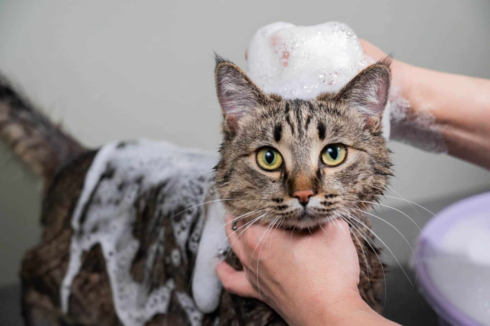
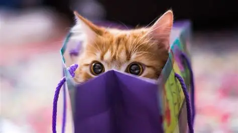

Welcome to Anisha's cat shop!
Catglow
Our service package includes everything your cat needs to stay healthy and comfortable. This includes basic health check‑ups, vaccinations, and routine clinic treatments. We also provide care for minor illnesses, grooming support and advice on nutrition & wellbeing. Each visit is handled by friendly staff who make sure your cat feels safe and cared for.
![✨Welcome to Anisha’s Premium Cat Care Services✨
Our service package includes everything your cat needs to stay healthy and comfortable. This includes basic health check‑ups, vaccinations, and routine clinic treatments. We also provide care for minor illnesses, grooming support, and advice on nutrition and wellbeing. Each visit is handled by friendly staff who make sure your cat feels safe and cared for.
we provide loving, reliable care for every cat. Our services include clinic check‑ups, treatments and essential health care to keep your feline happy and healthy.
Your cat’s wellbeing is always our top priority.](images/cat-healthcare.webp)
Grooming
Our grooming services include gentle bathing, brushing, nail trimming, ear cleaning and coat care to keep your cat looking & feeling their best. We use safe, cat‑friendly products and make sure every grooming session is calm and stress‑free for your furry friend

Seasonal
Our Seasonal Care service area is designed to keep your feline friends happy, healthy and stylish all year long. Each season brings new options & refreshing summer grooming packages to help cats stay cool, cozy winter wellness bundles with extra hydration and coat care plus special spring and autumn health-check promotions to support shedding cycles and overall wellbeing. We also offer limited‑edition seasonal products from themed toys and treats to weather‑appropriate accessories, ensuring your cat enjoys the very best every season has to offer.
